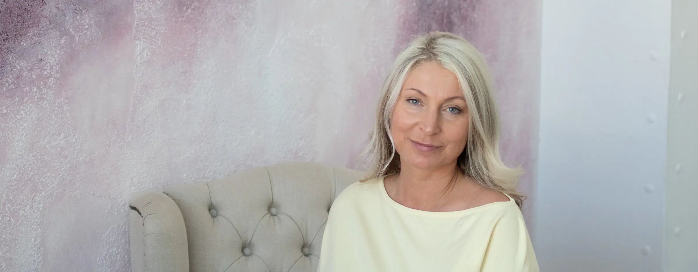
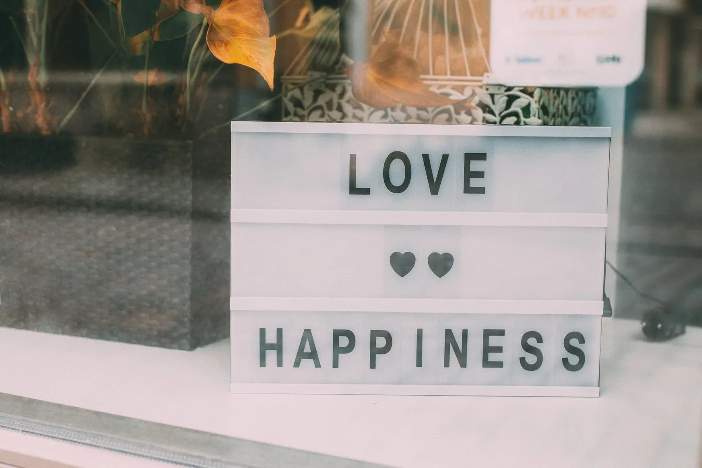
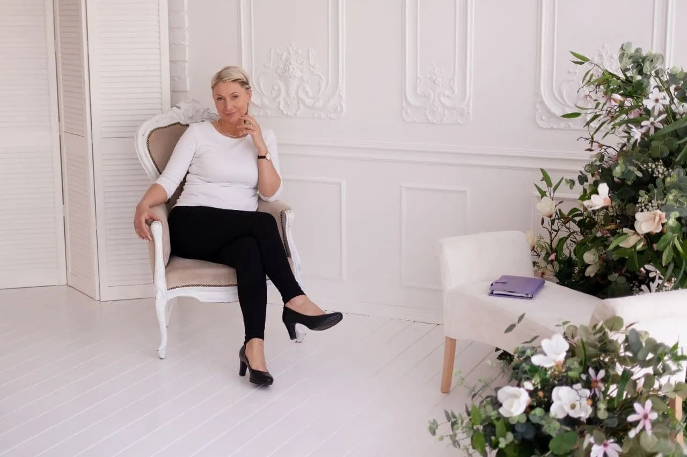

Видео-консультации психолога
который помогает с теплом и вниманием пройти важные этапы жизни.
Если чувствуете, что пришло время перемен — выбираете удобный день и получаете на почту письмо с деталями встречи.
Если хотите очно в Таллинне — пишите на мейл online.psychologyonline@gmail.com
Я здесь, чтобы поддержать Вас
Посмотреть свободное времяОдин маленький шаг сейчас и вектор Вашей жизни изменит направление
В жизни каждого человека бывают трудности – и не всегда понятно, что с этим делать. Поговорите об этом со мной и Вы сможете
 Принять себяобрести гармонию и желание жить полной жизнью
Принять себяобрести гармонию и желание жить полной жизнью Наладить отношенияс партнером, детьми, родителями, начальником, коллегами
Наладить отношенияс партнером, детьми, родителями, начальником, коллегами Установить границыотстаивать свои и не нарушать чужие
Установить границыотстаивать свои и не нарушать чужие- Регулировать свои эмоцииотпустить чувство вины, обиды, стыд, страх, ревность, гнев
- Распознавать манипуляциине позволять другим манипулировать вами

Делать осознанный выборлучше понимать себя, обрести любовь и счастье Расставлять приоритетыставить реальные цели и достигать их (поможет коуч-сессия)
Расставлять приоритетыставить реальные цели и достигать их (поможет коуч-сессия) Поднять самооценкууважать и ценить себя и свои достижения
Поднять самооценкууважать и ценить себя и свои достижения

Коуч - сессия 2 часа
Благодаря специальной системе вопросов помогу Вам поставить или создать цель и план по ее достижению.
Происходит переосмысление и активизируются Ваши скрытые ресурсы.
Цели из абсолютно разных сфер - карьера, профориентация, образование, расширение или открытие бизнеса, накопление средств, инвестирование, переезд в другую страну и т. д.
Удобный видеочат
Конфиденциальные сессии с психологом проходят по безопасному видеочату, который работает на всех устройствах из любой точки мира.
Чем удобнее онлайн?
По мере развития IT-технологий найти хорошего психолога в любой точке планеты уже не проблема. Главное, чтобы был интернет или мобильная связь под рукой. Исследование Цюрихского университета показало, что онлайн консультации по эффективности иногда превосходят очное консультирование.
- Вы можете лучше организовать свое время. Можете говорить с камерой и без, не стесняясь своих эмоций или мимики. Подобная форма консультирования удобна для тех, кто предпочитает анонимность.
- Гарантия абсолютной конфиденциальности. Для работы с проблемами мы не просим предоставлять реальные имена, не требуется регистрация на сайте и тому подобные подробности.
- Сеансы психолога здесь могут быть более удобными по сравнению с поездкой в кабинет психолога из-за времени в пути и затрат на дорогу.
- Кроме того, онлайн-консультация может быть доступна там, где вы чувствуете себя наиболее естественно и расслабленно, что позволяет вам сосредоточиться на взаимодействии с психологом
- Вы можете очень быстро получить доступ к специалисту, если у вас вдруг случился какой-то кризис. Консультации могут не прерываться, даже если вы уезжаете куда-то и есть доступ к интернету.
- Консультацию можно прервать в любой удобный момент
- Во время общения возможен быстрый обмен дополнительной информацией, рисунками, сканами, фотографиями, если они у вас под рукой, и не нужно ждать следующей встречи.
- Онлайн-терапия также эффективна в отношении дополнительного поддерживающего сопровождения на пути изменения вашей жизни.
Существующие ограничения
- Психолог работает со здоровыми людьми и их временными трудностями. Я не психотерапевт и не психиатр, поэтому не диагностирую болезни и не выписываю медицинские рецепты
- Провожу индивидуальные консультации для взрослых и подростков от 14 лет (с детьми не работаю)
- С Хайгекассой не сотрудничаю
- Справки для разрешения на ношение оружия не выдаю .
- Психозы и тяжелая депрессия не поддаются лечению онлайн. Показана медикаментозная терапия.